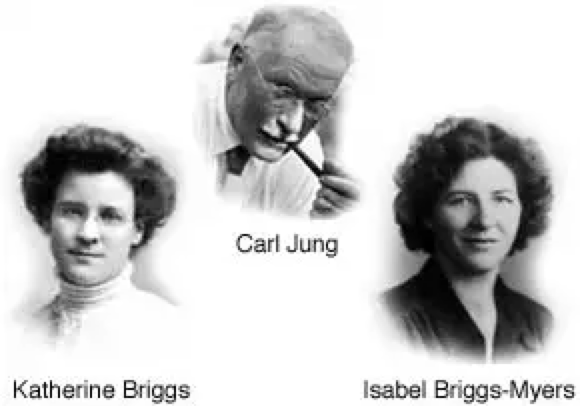
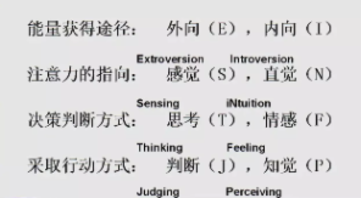

“It’s so incredible to finally be understood.”
Only 10 minutes to get a “freakishly accurate” description of who you are and why you do things the way you do.
Swiss psychologist Carl Jung believed that perception and judgment are the two fundamental functions of the mind. The moment the mind makes a decision can be broken down into two stages: the perception stage (which is further divided into sensing and intuitive perception) and the judgment stage (which is further divided into feeling and thinking judgment).
For ease of understanding, we can intuitively imagine the process of the mind making a decision as follows: (after the brain acquires information) sensing perception — intuitive perception — feeling judgment — thinking judgment, and finally making a decision. However, please remember that in reality, this process is interwoven and occurs in an instant, rather than in the simple linear sequence imagined.
Although everyone’s mind goes through these four stages when making a decision, the degree of inclination toward each stage can vary among individuals (which can also be understood as differing durations of focus). Some people may tend to linger more in the sensing perception stage and quickly pass through intuitive perception, while others may spend more time in feeling judgment and quickly move through thinking judgment. Additionally, these two fundamental functions of the mind are also influenced by individual sources of energy and lifestyle differences (as proposed by American psychologist Katherine Cook Briggs), leading to a wide variety of final decisions.
After years of practice and continuous refinement, Jung’s personality classification theory has become the theoretical foundation for data-supported personality classification models internationally.
1943 The first version of the MBTI® assessment was developed
1962 The Educational Testing Service (ETS) published the latest version of the MBTI® assessment.
1971 Isabel Myers and Mary McCaulley established the Center for the Study of Psychological Type at the University of Florida and created a central database.
1977 CPP published the original commercial version of the MBTI® assessment — Form G.
1979 The Association for Psychological Type (APT) was established. That same year, Research in Psychological Type was published, which later became the Psychological Type (JPT) journal, dedicated specifically to MBTI® research
1986 Katharine Myers and Margaret Hartzler launched the first CPP-approved MBTI® certification training program in Sydney, Australia
1997 OPP Ltd. (the UK distributor for the MBTI® assessment) released the European version of the MBTI Step I™ assessment after gathering extensive national data.
1998 After collecting extensive national data, CPP published the MBTI® Step I™ Form M assessment
2001 CPP published the MBTI® Step II™ Form Q assessment.
2001 Skill&Will™ became the officially authorized MBTI® certification training center for the Chinese region and introduced the Chinese versions of the Form G and Form K assessments, marking MBTI®'s official entry into the Chinese market.
2001 The world-renowned assessment organization Buros officially published evaluation reports for the MBTI® Step I™ and MBTI® Step II™ assessments
2003 Skill&Will™ officially introduced the Chinese version of the MBTI® Step I™ Form M assessment
2003 - 2007 OPP and CPP jointly researched and released a new version of the MBTI® Step II™, including European English and eight other European languages
2011 Skill&Will™ officially introduced the Chinese version of the MBTI® Step II™ Form Q assessment.
2016 Skill&Will™ successfully conducted 100 MBTI® Chinese certification training sessions in Mainland China and certified nearly 2,000 MBTI® practitioners.
2017 CPP officially revised the technical white papers for the Simplified Chinese versions of the MBTI® Step I™ and MBTI® Step II™ assessments
2018 Myers-Briggs released the international revised versions, namely the Global Step I™ and Global Step II™ assessments